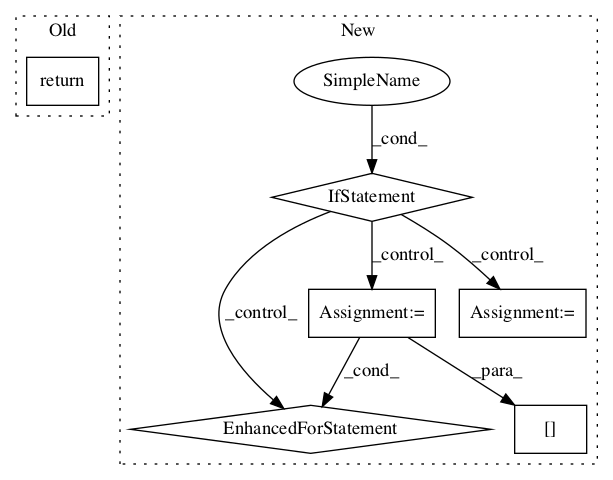

78a7f7de24c34235d0784a5781f46de34d2336eb,python/baseline/tf/lm/model.py,LanguageModelBase,make_input,#LanguageModelBase#Any#Any#,119

Before Change
if y is not None:
feed_dict[self.y] = batch_dict["y"]
return feed_dict
def predict(self, batch_dict):
Do prediction from a `batch_dict`
After Change
:param train: (`bool`) Are we training (or evaluating)?
:return: A `feed_dict`
if get_version(tf) < 2:
batch_dict_for_model = new_placeholder_dict(train)
for key in self.src_keys:
batch_dict_for_model["{}:0".format(key)] = batch_dict[key]
y = batch_dict.get("y")
if y is not None:
batch_dict_for_model[self.y] = batch_dict["y"]
else:
SET_TRAIN_FLAG(train)
batch_dict_for_model = {}
for key in self.src_keys:
batch_dict_for_model[key] = batch_dict[key]
return batch_dict_for_model
def predict(self, batch_dict):
Do prediction from a `batch_dict`
In pattern: SUPERPATTERN
Frequency: 3
Non-data size: 6
Instances
Project Name: dpressel/mead-baseline
Commit Name: 78a7f7de24c34235d0784a5781f46de34d2336eb
Time:
Author: null
File Name: python/baseline/tf/lm/model.py
Class Name: LanguageModelBase
Method Name: make_input
Project Name: openai/baselines
Commit Name: b71152eea0470ac2629c33e0fc66a54fe494949f
Time:
Author: null
File Name: baselines/common/vec_env/dummy_vec_env.py
Class Name: DummyVecEnv
Method Name: reset
Project Name: openai/baselines
Commit Name: b71152eea0470ac2629c33e0fc66a54fe494949f
Time:
Author: null
File Name: baselines/common/vec_env/dummy_vec_env.py
Class Name: DummyVecEnv
Method Name: step_wait